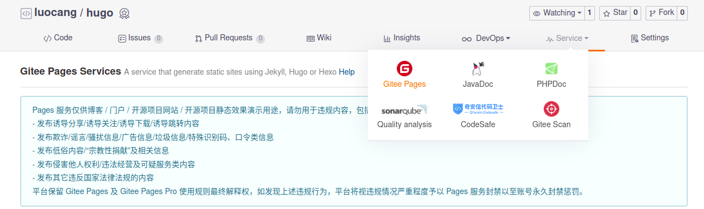
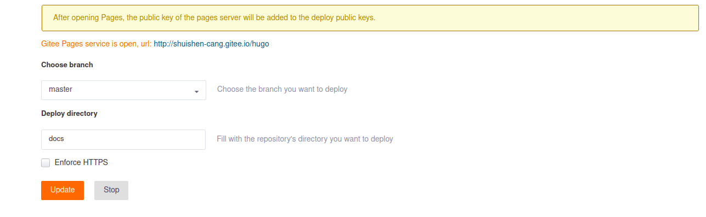

Test
一、安装hugo
1. 安装hugo
sudo apt install hugo
hugo new site myblog
cd myblog
luocang@luocang-SC:~/workspace/03doc/myblog$ ls
archetypes config.toml content data layouts static themes
使用hugo生成了一系列的文件以及文件夹，其中content为需要的markdown文件存放路径，themes为存放皮肤的文件夹，config.toml为hugo的对应配置文件，可以设置标签等。
2. 设置皮肤
皮肤可以在hugo的官网https://www.gohugo.org/theme/中获取，为了后期的兼容，在下载后需要去除.git文件夹。
cd themes
git clone git@github.com:TiTi/hurock.git
cd hurock/
rm -rf .git/
3. 配置皮肤
选择使用皮肤需要在config.toml里面设置。
cd ../../
subl config.toml
#修改为以下代码
baseURL = "https://shuishen-cang.github.io/"
languageCode = "en-us"
title = "洛沧-blog"
theme = "hurock"
4. helloworld
hugo new post/hello.md
subl content/post/hello.md
# 修改为以下代码
---
title: "Hello"
date: 2021-02-01T20:06:38+08:00
draft: false
---
helloworld
5.关联gitee
在gitee上面新建一个仓库，我建立的仓库名字为hugo，建立的仓库是一个空的仓库，将博客关联到远端仓库。
git init
hugo -d docs
git add .
git commit -m "first commit"
git remote add origin git@gitee.com:shuishen-cang/hugo.git
git push -u origin master
在gitee的仓库上设置静态网页，选择service->gitee pages，选择创建链接公网IP。

我生成的静态网站位于docs下面，因此选择子目录为docs，这样生成了一个公网域名http://shuishen-cang.gitee.io/hugo，通过该域名便可以访问博客。

由于之前生成静态网站的时候，并没有选择对应的域名，因此需要重新生成，否则网页没法显示相应的皮肤等。重新上传代码后，需要手动更新gitee pages，这里有点坑了，这点远不如github了，但是gitee的访问速度比github要快，因此也就将就一下了。
hugo --baseURL="http://shuishen-cang.gitee.io/hugo/" -d docs
git add .
git commit -m "3 commit"
git push origin master
二、设置标签
由于gitee pages需要手动刷新，因此这里选择使用github上的静态网站，我在github上的静态网站域名为https://shuishen-cang.github.io/。
使用hyde-y皮肤后，可以在config.toml设置相关的用户信息。
baseurl = "http://www.example.com"
# Site title
title = "洛沧-blog"
# Copyright
copyright = "(c) 2015 yourname."
# Language
languageCode = "en-EN"
# Metadata format
# "yaml", "toml", "json"
metaDataFormat = "yaml"
# Theme to use (located in /themes/THEMENAME/)
theme = "hyde-y"
# Pagination
paginate = 10
paginatePath = "page"
# Enable Disqus integration
disqusShortname = "your_disqus_shortname"
[permalinks]
post = "/:year/:month/:day/:slug/"
code = "/:slug/"
[taxonomies]
tag = "tags"
topic = "topics"
[author]
name = "luocang"
email = "335403241@qq.com"
#
# All parameters below here are optional and can be mixed and matched.
#
[params]
# You can use markdown here.
brand = "luocang"
topline = "few words about your site"
footline = "code with <i class='fa fa-heart'></i>"
# Sidebar position
# false, true, "left", "right"
sidebar = "left"
# Text for the top menu link, which goes the root URL for the site.
# Default (if omitted) is "Home".
home = "home"
# Select a syntax highight for highlight.js
# Check the static/css/highlight directory for options.
# Leave unset to fall back to default hugo highlighter instead of highlight.js
highlight = "default"
# Google Analytics.
googleAnalytics = "Your Google Analytics tracking code"
# Sidebar social links.
github = "https://github.com/shuishen-cang" # Your Github profile ID
gitee = "https://gitee.com/shuishen-cang/"
# Sidebar RSS link: will only show up if there is a RSS feed
# associated with the current page
rss = true
[blackfriday]
angledQuotes = true
fractions = false
hrefTargetBlank = false
latexDashes = true
plainIdAnchors = true
extensions = []
extensionmask = []
[markup.goldmark.renderer]
unsafe= true
三、 编写脚本文件
1.设置mermaid兼容
typora可以直接生成mermaid相应的流程图，但是hugo中不支持该步骤，因此需要对该方便做一些处理。其原理是用html实现mermaid语法，使用js文件实现html语法。因此需要以下步骤
- 设置hugo支持html
- 在网上下载相对应的js文件，在markdown文件中指定js文件
js文件路径： https://cdn.bootcss.com/mermaid/8.0.0-rc.8/mermaid.min.js
2.处理图片
typora插入图片的时候会将图片保存到本地，在推送blog到远程端口的时候需要将图片推送到网络端。
3. python
'''
Author: your name
Date: 2021-02-01 16:52:13
LastEditTime: 2021-02-01 22:28:29
LastEditors: Please set LastEditors
Description: In User Settings Edit
FilePath: /mydoc/python/convert.py
'''
import sys,os,shutil,re
python_path = os.getcwd()
md_path = os.path.abspath(os.path.join(python_path,'./mydoc'))
blog_path = os.path.abspath(os.path.join(python_path,'./content/post'))
image_path = os.path.abspath(os.path.join(python_path,'./content/post/images'))
def find_allmd():
for (root, dirs, files) in os.walk(md_path):
for file in files:
if file.endswith('.md'):
file_txt = process_picture(os.path.join(root,file))
file_txt = process_mermaid(file_txt)
create_newfile(file_txt, file)
def process_picture(file_path):
with open(file_path,'r') as f:
txt = f.read()
f.close()
pic_paths = re.findall( r'\[image(.*?)\((.*?)\)', txt)
for pic in pic_paths:
pic_filepath = os.path.split(pic[1])[0]
pic_filename = os.path.split(pic[1])[1]
txt = txt.replace(pic_filepath, '../images')
shutil.copyfile(pic[1],os.path.join(image_path,pic_filename))
return txt
def process_mermaid(txt):
mermaid_codes = re.findall( r'```mermaid\n(.*?)```', txt, re.S)
for mermaid_code in mermaid_codes:
old_txt = '```mermaid\n' + mermaid_code + '```'
new_txt = '<div class=\"mermaid\">\n' + mermaid_code + '</div>'
txt = txt.replace(old_txt, new_txt)
txt += '\n<script src=\"../js/mermaid.min.js\"></script>'
return txt
def create_newfile(file_txt,file):
file_path = os.path.join(blog_path,file)
with open(file_path,'w') as f:
f.write(file_txt)
f.close()
def main():
find_allmd()
main()